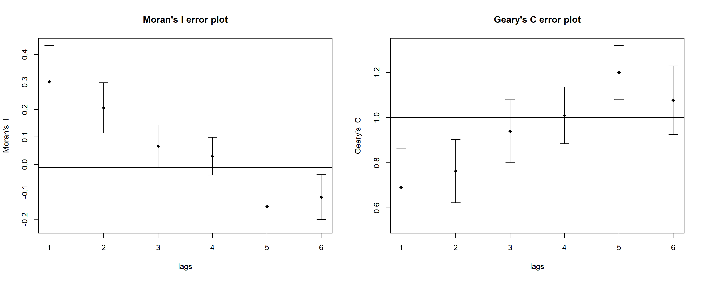

Global and local measures of spatial auto correlation
1. Quick Recap
In previous sections we have seen how to
extract geospatial and aspatial datasets,
convert one projection to another,
perform exploratory data analysis,
create choropleth map using tmap’s elements and leverage its asthetics,
compute spatial weights (QUEEN, ROOK) and plot them,
compute distance weight matrix
2. Introduction
In this section, let’s see how to compute Global and Local Measure of Spatial Autocorrelation (GLSA). In spatial policy, one of the main development objective of the local govenment and planners is to ensure equal distribution of development in the province. Our task is to apply appropriate spatial statistical methods to discover if development are even distributed geographically.
3. Glimpse of Steps
Some of the important steps performed in this study are as follows
importing geospatial data using appropriate function(s) of sf package,
importing csv file using appropriate function of readr package,
performing relational join using appropriate join function of dplyr package,
computing Global Spatial Autocorrelation (GSA) statistics by using appropriate functions of spdep package,
plot Moran scatterplot,
compute and plot spatial correlogram using appropriate function of spdep package.
computing Local Indicator of Spatial Association (LISA) statistics for detecting clusters and outliers by using appropriate functions spdep package;
computing Getis-Ord’s Gi-statistics for detecting hot spot or/and cold spot area by using appropriate functions of spdep package; and
visualising the analysis output by using tmap package.
4. Data
Following two data sets are used:
Hunan province administrative boundary layer at county level. This is a geospatial data set in ESRI shapefile format
Hunan_2012.csv: This csv file contains selected Hunan’s local development indicators in 2012
5. Deep Dive into Map Analysis
5.1 Installing libraries and Importing files
p_load function pf pacman package is used to install and load sf ,tidyverse and tmap packages into R environment. First, let us import Hunan shapefile into R using st_read() of sf package. The imported shapefile will be simple features Object of sf. Next, let us import Hunan_2012.csv into R by using read_csv() of readr package. The output is R dataframe class.
Rows: 88 Columns: 29
── Column specification ────────────────────────────────────────────────────────
Delimiter: ","
chr (2): County, City
dbl (27): avg_wage, deposite, FAI, Gov_Rev, Gov_Exp, GDP, GDPPC, GIO, Loan, ...
ℹ Use `spec()` to retrieve the full column specification for this data.
ℹ Specify the column types or set `show_col_types = FALSE` to quiet this message.
5.2 Data Wrangling
The code chunk below will be used to update the attribute table of hunan’s SpatialPolygonsDataFrame with the attribute fields of hunan2012 dataframe. This is performed by using left_join() of dplyr package.
hunan <-left_join(hunan,hunan2012)
Joining, by = "County"
5.3 Visualising Regional Development Indicator
Now, let us prepare a basemap and a choropleth map showing the distribution of GDPPC 2012 by using qtm() of tmap package.
It is seen that map classification with quantile interval is better than map classification with equal interval as the former clearly spreads out rather clustering into one segment. Hence, quantile style will be used in further analysis.
5.4 Global Spatial Autocorrelation
5.4.1 Computing Contiguity Spatial Weights
Before we can compute the global spatial autocorrelation statistics, we need to construct a spatial weights of the study area. The spatial weights is used to define the neighbourhood relationships between the geographical units (i.e. county) in the study area. The code chunk below is used to compute Queen contiguity weight matrix.
wm_q <-poly2nb(hunan, queen=TRUE)summary(wm_q)
Neighbour list object:
Number of regions: 88
Number of nonzero links: 448
Percentage nonzero weights: 5.785124
Average number of links: 5.090909
Link number distribution:
1 2 3 4 5 6 7 8 9 11
2 2 12 16 24 14 11 4 2 1
2 least connected regions:
30 65 with 1 link
1 most connected region:
85 with 11 links
5.4.2 Row-standardised weights matrix
Next, let us assign weights to each neighboring polygon. In our case, each neighboring polygon will be assigned equal weight (style=“W”).
Characteristics of weights list object:
Neighbour list object:
Number of regions: 88
Number of nonzero links: 448
Percentage nonzero weights: 5.785124
Average number of links: 5.090909
Weights style: W
Weights constants summary:
n nn S0 S1 S2
W 88 7744 88 37.86334 365.9147
5.4.3 Global Spatial Autocorrelation: Moran’s I
The code chunk below performs Moran’s I statistical testing using moran.test() of spdep.
Moran I test under randomisation
data: hunan$GDPPC
weights: rswm_q
Moran I statistic standard deviate = 4.7351, p-value = 1.095e-06
alternative hypothesis: greater
sample estimates:
Moran I statistic Expectation Variance
0.300749970 -0.011494253 0.004348351
Interpretation:
H1 (Alternative Hypothesis) - GDPPC distribution is spatially dependent.
H0 (Null Hypothesis) - GDPPC distribution is a random phenomenon.
At 95% confidence interval, p=value is less than alpha (0.05). Hence it is significant and so null hypothesis can be rejected and confirm that GDPPC is not randomly distributed and the spatial distribution of high values and/or low values are more spatially clustered and observations tend to be similar.
Computing Monte Carlo Moran’s I
The code chunk below performs permutation test for Moran’s I statistic by using moran.mc() of spdep. A total of 1000 simulation will be performed.
Monte-Carlo simulation of Moran I
data: hunan$GDPPC
weights: rswm_q
number of simulations + 1: 1000
statistic = 0.30075, observed rank = 1000, p-value = 0.001
alternative hypothesis: greater
Similarly, even after performing 1000 permutations, it is confirmed that at 95% confidence interval, p value is significant (less than 0.05) and Z score is positive. So null hypothesis can be rejected and confirm that GDPPC is not randomly distributed and the spatial distribution of high values and/or low values are more spatially clustered and observations tend to be similar.
Let us examine the simulated Moran’s I test statistics in detail by plotting the distribution of the statistical values as a histogram by using the code chunk below.
mean(bperm$res[1:999])
[1] -0.01504572
var(bperm$res[1:999])
[1] 0.004371574
summary(bperm$res[1:999])
Min. 1st Qu. Median Mean 3rd Qu. Max.
-0.18339 -0.06168 -0.02125 -0.01505 0.02611 0.27593
Simulated values are both positive and negative. The positive values indicate that the values are clustered, observations tend to be similar; whereas the negative values on the left of 0 indicate that the values are dispersed and observations tend to be dissimilar.
Challenge: Plotting using ggplot
Now the same visualisation is plotted using ggplot instead of base graph.
res values are converted to dataframe and passed as ggplot data
geom_histogram() is used on top of ggplot to plot the histogram
vertical line is plotted at value 0 using geom_vline()
p1 <-ggplot(data=as.data.frame(bperm[7]), aes(x= res)) +geom_histogram(bins=20, color="black", fill="light blue") +geom_vline(aes(xintercept=0),color="red", linetype="dashed", size=1)+labs(title ="Moran's I test statistic distribution",x ="Moran's I",y ="Frequency")p1
Interpretation:
Simulated values are both positive and negative. The positive values indicate that the values are clustered, observations tend to be similar; whereas the negative values on the left of 0 indicate that the values are dispersed and observations tend to be dissimilar.
5.4.5 Global Spatial Autocorrelation: Geary’s
The code chunk below performs Geary’s C test for spatial autocorrelation by using geary.test() of spdep.
geary.test(hunan$GDPPC, listw=rswm_q)
Geary C test under randomisation
data: hunan$GDPPC
weights: rswm_q
Geary C statistic standard deviate = 3.6108, p-value = 0.0001526
alternative hypothesis: Expectation greater than statistic
sample estimates:
Geary C statistic Expectation Variance
0.6907223 1.0000000 0.0073364
Analysis:
H0 : The attribute is randomly distributed among the features in Hunan
H1: The attribute is not randomly distributed among the features in Hunan
As the p-value is significant, null hypothesis can be rejected, and we can conclude that the attribute is not randomly distributed and the spatial distribution in the dataset is more spatially clustered than the expected value.
Computing Monte Carlo Geary’s C
The code chunk below performs permutation test for Geary’s C statistic by using geary.mc() of spdep.
Monte-Carlo simulation of Geary C
data: hunan$GDPPC
weights: rswm_q
number of simulations + 1: 1000
statistic = 0.69072, observed rank = 1, p-value = 0.001
alternative hypothesis: greater
Interpretation:
Here at 95% confidence interval, p value is less than 0.05 and Geary’s C value (Z score)is less than 1. So, we can reject the null hypothesis and confirm that the values are clustered, observations tend to be similar.
mean(bperm$res[1:999])
[1] 1.004402
var(bperm$res[1:999])
[1] 0.007436493
summary(bperm$res[1:999])
Min. 1st Qu. Median Mean 3rd Qu. Max.
0.7142 0.9502 1.0052 1.0044 1.0595 1.2722
Next, let us plot a histogram to reveal the distribution of the simulated values by using the code chunk below.
At c = 1, observations are arranged randomly over space. and half of the values here are less than 1 and almost half of the values are greater than 1. Hence we can confirm that the points which have larger c value (>1) are said to be dispersed, observations tend to be dissimilar and all the small values <1 indicate that they are clustered and observations tend to be similar.
5.5 Spatial Correlogram
Spatial correlograms are great to examine patterns of spatial autocorrelation in your data or model residuals. They show how correlated are pairs of spatial observations when you increase the distance (lag) between them - they are plots of some index of autocorrelation (Moran’s I or Geary’s c) against distance.
5.5.1 Compute Moran’s I correlogram
In the code chunk below, sp.correlogram() of spdep package is used to compute a 6-lag spatial correlogram of GDPPC. The global spatial autocorrelation used in Moran’s I and Geary’s C. The plot() of base Graph is then used to plot the output.
The plot() of base graph is then used to plot the output and the plots are arranged using par(mfrow()) parameter, here it is 1 row and 2 columns.
par(mfrow=c(1,2))MI_corr <-sp.correlogram(wm_q, hunan$GDPPC,order=6, method="I", style="W")plot(MI_corr,main ="Moran's I error plot")GC_corr <-sp.correlogram(wm_q, hunan$GDPPC, order=6, method="C", style="W")plot(GC_corr,main ="Geary's C error plot")

Interpretation:
The plots reveal that the relationship between Moran’s I and Geary’C test statistic values are inverse. Moran’s I values approach -1 whereas Geary’s C test values approach 2 for subsequent lags which indicates that quite dissimilar values tend to form a cluster.
By plotting the output might not allow us to provide complete interpretation. This is because not all autocorrelation values are statistically significant. Hence, it is important for us to examine the full analysis report by printing out the analysis results as in the code chunk below.
Both Moran’s I and Geary’s C test results show that at 90% confidence, (alpha value = 0.01), most of the autocorrelated values are significant. And hence we can reject the null hypothesis stating the feature are random and with statistical evidences, we can confirm the following
Observed spatial pattern of GDPPC is spatially dependent and not equally likely as any other spatial pattern.
GDPPC at one location depends on values at other (neighbouring) locations.
5.6 Cluster and Outlier Analysis
Local Indicators of Spatial Association or LISA are statistics that evaluate the existence of clusters in the spatial arrangement of a given variable.
5.6.1 Computing local Moran’s I
The code chunks below are used to compute local Moran’s I of GDPPC2012 at the county level.
fips <-order(hunan$County)localMI <-localmoran(hunan$GDPPC, rswm_q)head(localMI)
Variable(s) "Ii" contains positive and negative values, so midpoint is set to 0. Set midpoint = NA to show the full spectrum of the color palette.
Analysis:
From the above map, we can understand the following
- Cluster - All positive valued region have neighboring features with similarly high or low attribute values
- Outlier - All negative valued regions have neighboring features with dissimilar values
5.6.4 Mapping local Moran’s I p-values
The code chunks below produce a choropleth map of Moran’s I p-values by using functions of tmap package.
tm_shape(hunan.localMI) +tm_fill(col ="Pr.Ii", breaks=c(-Inf, 0.001, 0.01, 0.05, 0.1, Inf),palette="-Blues", title ="local Moran's I p-values") +tm_borders(alpha =0.5)+tm_compass(type="8star",position=c("right", "top"))+tm_layout(main.title ="Local Moran p vlaues spatial distribution",main.title.size =1.5,main.title.position ="center",main.title.fontface ="bold")
Analysis:
From the above map, we can understand the following
- For every corresponding I value, we can locate the regions which are significant or not.
- Darker the region, higher the significance
5.6.5 Mapping both local Moran’s I values and p-values
Let us now plot both the local Moran’s I values map and its corresponding p-values map next to each other for effective interpretation.
localMI.map <-tm_shape(hunan.localMI) +tm_fill(col ="Ii", style ="pretty", title ="local moran statistics") +tm_borders(alpha =0.5)+tm_compass(type="8star",position=c("right", "top"))+tm_layout(main.title ="Local Moran I spatial distribution",main.title.size =1.5,main.title.position ="center",main.title.fontface ="bold")pvalue.map <-tm_shape(hunan.localMI) +tm_fill(col ="Pr.Ii", breaks=c(-Inf, 0.001, 0.01, 0.05, 0.1, Inf),palette="-Blues", title ="local Moran's I p-values") +tm_borders(alpha =0.5)+tm_compass(type="8star",position=c("right", "top"))+tm_layout(main.title ="Local Moran p value spatial distribution",main.title.size =1.5,main.title.position ="center",main.title.fontface ="bold")tmap_arrange(localMI.map, pvalue.map, asp=1, ncol=2)
Variable(s) "Ii" contains positive and negative values, so midpoint is set to 0. Set midpoint = NA to show the full spectrum of the color palette.
Analysis:
From the left map, we can understand the following
- Cluster - All positive valued region have neighboring features with similarly high or low attribute values
- Outlier - All negative valued regions have neighboring features with dissimilar values
From the right map, we can understand the following
- For every corresponding I value, we can locate the regions which are significant or not.
- Darker the region, higher the significance.
5.7 Creating a LISA Cluster Map
The LISA Cluster Map shows the significant locations color coded by type of spatial autocorrelation. The first step before we can generate the LISA cluster map is to plot the Moran scatterplot.
5.7.1 Plotting Moran scatterplot
The code chunk below plots the Moran scatterplot of GDPPC 2012 by using moran.plot() of spdep.
nci <-moran.plot(hunan$GDPPC, rswm_q,labels=as.character(hunan$County), xlab="GDPPC 2012", ylab="Spatially Lag GDPPC 2012")
5.7.2 Plotting Moran scatterplot with standardised variable
First let us use scale() to centers and scales the variable. Centering is done by subtracting the mean (omitting NAs) the corresponding columns, and scaling is done by dividing the (centered) variable by their standard deviations.
We can see that GDPPC spatial distribution is positively autocorrelated in the northern region i.e. those are associated with relatively high values of the surrounding locations.
Let us now plot both the local Moran’s I values map and its corresponding p-values map next to each other for effective interpretation.
In left map with normal choropleth, GDPCC distribution is all over place. We couldn’t find any significant regions whereas in the right side map, we can see that spatial distribution of GDPPC is positively autocorrelated in the eastern region i.e. those are associated with relatively high values of the surrounding locations.
5.8 Hot Spot and Cold Spot Area Analysis
Beside detecting cluster and outliers, localised spatial statistics can be also used to detect hot spot and/or cold spot areas.
5.8.1 Deriving the centroid
To get our longitude values we map the st_centroid() function over the geometry column of us.bound. This allows us to get only the longitude, which is the first value in each centroid. We do the same for latitude with one key difference. We access the second value per each centroid. Now that we have latitude and longitude, we use cbind to put longitude and latitude into the same object.
Firstly, we need to determine the upper limit for distance band by using the steps below:
Return a matrix with the indices of points belonging to the set of the k nearest neighbours of each other by using knearneigh() of spdep.
Convert the knn object returned by knearneigh() into a neighbours list of class nb with a list of integer vectors containing neighbour region number ids by using knn2nb().
Return the length of neighbour relationship edges by using nbdists() of spdep. The function returns in the units of the coordinates if the coordinates are projected, in km otherwise.
Remove the list structure of the returned object by using unlist().
Min. 1st Qu. Median Mean 3rd Qu. Max.
24.79 32.57 38.01 39.07 44.52 61.79
The summary report shows that the largest first nearest neighbour distance is 61.79 km, so using this as the upper threshold gives certainty that all units will have at least one neighbour.
5.8.3 Computing fixed distance weight matrix
Now, let us compute the distance weight matrix by using dnearneigh() as shown in the code chunk below.
Characteristics of weights list object:
Neighbour list object:
Number of regions: 88
Number of nonzero links: 324
Percentage nonzero weights: 4.183884
Average number of links: 3.681818
Link number distribution:
1 2 3 4 5 6
6 15 14 26 20 7
6 least connected regions:
6 15 30 32 56 65 with 1 link
7 most connected regions:
21 28 35 45 50 52 82 with 6 links
Weights style: B
Weights constants summary:
n nn S0 S1 S2
B 88 7744 324 648 5440
5.8.4 Computing adaptive distance weight matrix
It is possible to control the numbers of neighbours directly using k-nearest neighbours, either accepting asymmetric neighbours or imposing symmetry as shown in the code chunk below.
knn <-knn2nb(knearneigh(coords, k=8))knn
Neighbour list object:
Number of regions: 88
Number of nonzero links: 704
Percentage nonzero weights: 9.090909
Average number of links: 8
Non-symmetric neighbours list
The Gi statistics is represented as a Z-score. Greater values represent a greater intensity of clustering and the direction (positive or negative) indicates high or low clusters.
fips <-order(hunan$County)gi.fixed <-localG(hunan$GDPPC, wm62_lw)gi.fixed
[1] 0.436075843 -0.265505650 -0.073033665 0.413017033 0.273070579
[6] -0.377510776 2.863898821 2.794350420 5.216125401 0.228236603
[11] 0.951035346 -0.536334231 0.176761556 1.195564020 -0.033020610
[16] 1.378081093 -0.585756761 -0.419680565 0.258805141 0.012056111
[21] -0.145716531 -0.027158687 -0.318615290 -0.748946051 -0.961700582
[26] -0.796851342 -1.033949773 -0.460979158 -0.885240161 -0.266671512
[31] -0.886168613 -0.855476971 -0.922143185 -1.162328599 0.735582222
[36] -0.003358489 -0.967459309 -1.259299080 -1.452256513 -1.540671121
[41] -1.395011407 -1.681505286 -1.314110709 -0.767944457 -0.192889342
[46] 2.720804542 1.809191360 -1.218469473 -0.511984469 -0.834546363
[51] -0.908179070 -1.541081516 -1.192199867 -1.075080164 -1.631075961
[56] -0.743472246 0.418842387 0.832943753 -0.710289083 -0.449718820
[61] -0.493238743 -1.083386776 0.042979051 0.008596093 0.136337469
[66] 2.203411744 2.690329952 4.453703219 -0.340842743 -0.129318589
[71] 0.737806634 -1.246912658 0.666667559 1.088613505 -0.985792573
[76] 1.233609606 -0.487196415 1.626174042 -1.060416797 0.425361422
[81] -0.837897118 -0.314565243 0.371456331 4.424392623 -0.109566928
[86] 1.364597995 -1.029658605 -0.718000620
attr(,"cluster")
[1] Low Low High High High High High High High Low Low High Low Low Low
[16] High High High High Low High High Low Low High Low Low Low Low Low
[31] Low Low Low High Low Low Low Low Low Low High Low Low Low Low
[46] High High Low Low Low Low High Low Low Low Low Low High Low Low
[61] Low Low Low High High High Low High Low Low High Low High High Low
[76] High Low Low Low Low Low Low High High Low High Low Low
Levels: Low High
attr(,"gstari")
[1] FALSE
attr(,"call")
localG(x = hunan$GDPPC, listw = wm62_lw)
attr(,"class")
[1] "localG"
Variable(s) "gstat_fixed" contains positive and negative values, so midpoint is set to 0. Set midpoint = NA to show the full spectrum of the color palette.
Analysis:
Plotting Gi map helps us to understand that GDPPC is associated with relatively high values of the surrounding locations (clustered- hotspot areas) in the eastern region of Hunan and are associated with relatively low values in surrounding locations (scattered - coldspot) in northern and southern region of Hunan.
The code chunk below are used to compute the Gi values for GDPPC2012 by using an adaptive distance weight matrix (i.e knb_lw).
fips <-order(hunan$County)gi.adaptive <-localG(hunan$GDPPC, knn_lw)hunan.gi <-cbind(hunan, as.matrix(gi.adaptive)) %>%rename(gstat_adaptive = as.matrix.gi.adaptive.)
5.9.4 Mapping Gi values with adaptive distance weights
The code chunk below shows the functions used to map the Gi values derived using fixed distance weight matrix.
Variable(s) "gstat_adaptive" contains positive and negative values, so midpoint is set to 0. Set midpoint = NA to show the full spectrum of the color palette.
Analysis:
Similarly, Gi Map with adaptive distance shows that GDPPC is associated with relatively high values of the surrounding locations (clustered- hotspot areas) in the eastern region of Hunan and are associated with relatively low values in surrounding locations (scattered - coldspot) in northern and southern region of Hunan.
6. Conclusion & Key Takeaways
In this exercise, we have seen in greater detail that how to compute Global and Local measure of Spatial Autocorrelation (GLSA) and also how to perform cluster analysis to group the attributes and finally the ways of executing hot spot and cold spot area analysis for easier understanding. In the upcoming section, let us view how to perform geographical segmentation with spatially constrained clustering techniques.